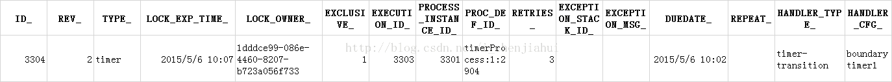

版权声明：本文为博主原创文章，未经博主允许不得转载。 https://blog.csdn.net/i_chenjiahui/article/details/45560269
最近刚开始上手activiti，发现在使用定时任务时，创建了定时job，缺一直不执行。
情况如下：
首先通过配置定时器穿件一个定时任务，设置超时时间60秒
<boundaryEvent id="boundarytimer1" name="Timer" attachedToRef="任务1" cancelActivity="true">
<timerEventDefinition>
<timeDuration>PT60S</timeDuration>
</timerEventDefinition>
</boundaryEvent>
当流程执行到该任务节点时，数据库中产生了一条job数据。其中字段DUEDATE_的值为当前时间60S后。
但是时间过了60秒，job并没有按预期执行。
翻看文档，发现Activiti的Job管理器，默认是关闭的，需要通过设置processEnginConfiguration中的
配置后重新尝试上述步骤，job任然未执行。
继续查看文档，发现是activiti与spring集成时，需要将activiti的引擎配置交由Spring来管理。
将activiti.cfg.xml中的bean，processEnginConfiguration，重新配置。
<bean id="processEngineConfiguration" class="org.activiti.spring.SpringProcessEngineConfiguration">
<property name="dataSource" ref="dataSource" />
<property name="databaseSchemaUpdate" value="true" />
<property name="jobExecutorActivate" value="true" />
</bean>
<bean id="processEngine" class="org.activiti.spring.ProcessEngineFactoryBean">
<property name="processEngineConfiguration" ref="processEngineConfiguration" />
</bean>
重启web容器，成功执行job，任务被认领。
